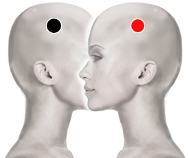

Discapacidad intelectual
parietal - parietal

Generalidades:
La discapacidad intelectual es una condición en la que las facultades mentales, y por lo tanto el rendimiento intelectual está por debajo del promedio, lo que lleva a una carencia de las destrezas necesarias para la vida como la coordinación, motriz, comunicación, interacción social, habilidad para resolver problemas o adaptación al medio. La discapacidad intelectual, se puede diagnosticar desde el nacimiento o la niñez.
Causas:
Existen muchos factores que pueden provocar la discapacidad intelectual, y en algunos casos las causas no se pueden determinar.
La bioenergética médica permite detectar muchos de estos trastornos y brindar un tratamiento, que puede resultar beneficioso, si se hace en etapas tempranas del embarazo.